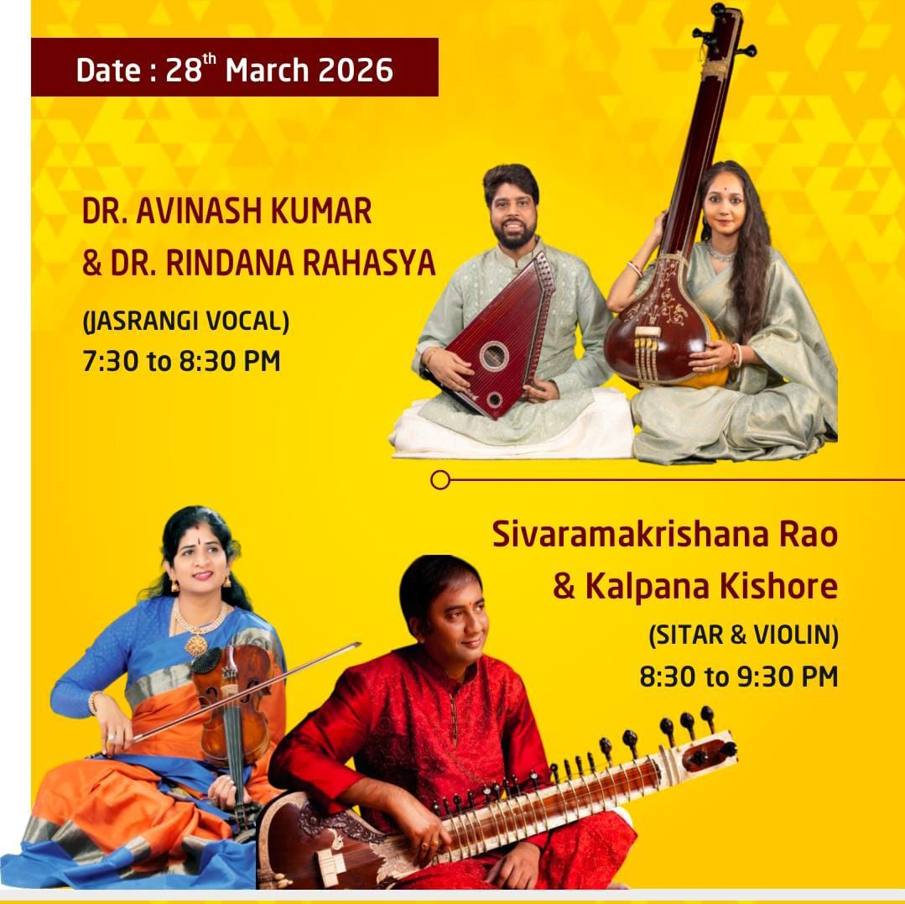

|| sarasvatI namastubhyam ||
Sitarist · Composer · Guru
Disciple of Ustad Ahmed Hussain Khan of the Mian Achpal and Senia Gharana. Bridging Hindustani and Carnatic traditions through the soul of the Sitar.


Basavaraj Sivaramakrishna Rao, fondly called Sitar Siva by friends, is a distinguished sitarist and composer who hails from a family of musicians. Initiated into the niceties of music at the tender age of seven by his father B. Sudarsana Rao, he went on to become a disciple of the illustrious and veteran sitarist, late Ustad Ahmed Hussain Khan of the Mian Achpal and Senia Gharana.
The melodious and mellifluous music that he brings out through the Sitar illustrates his strong creative imagination that scales great heights. Uniquely versatile, he is equally at home with the Hindustani classical idiom of alaap, jod, jhala and gath as with the Carnatic alapana, kriti and kalpanaswaras — a rare mastery among sitarists.
He has performed extensively across the globe — in the USA, Canada, France, Germany, Switzerland, Australia, China, Sri Lanka, South Africa, Mauritius, and the Middle East — gracing prestigious stages from the Melbourne Arts Festival and Drive East Festival in New York to the German Embassy in Berlin and Stanford University.
As the founder of Aruna Music Entertainment, he produces and composes music for artists across genres, and continues to teach the next generation through his SRK Academy of Music.

Concert Review

Concert Review

Telugu Newspaper Review

Indo-German Festival Review

Chennai Music Season

Performance at the Indian Embassy

Sri Lanka Performance

Concert Feature

Basavaraj Brothers Europe Tour 2024
For concert bookings, collaborations, or sitar lessons
Whether you are interested in booking a performance, collaborating on a musical project, or beginning your journey with the Sitar, we would love to hear from you.